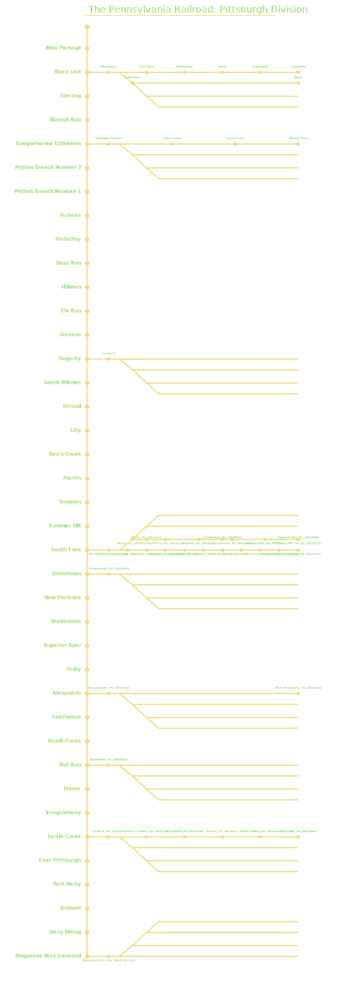

Home
|
About Project CT1000:
|
Meet Our Team!
|
View CT1000:
|
Route Map:
|
Graphs and Data:
|
Industries:
|
Stations:
Pennsylvania Railroad Pittsburgh Division: An Overview
The Pennsy's branches reached out beyond the primary mainline "trunk" of the system to serve industries, smaller communities, and occasionally formed connections with other railroads.
